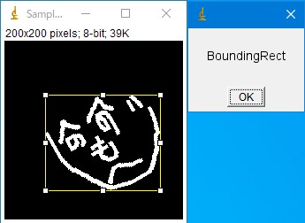
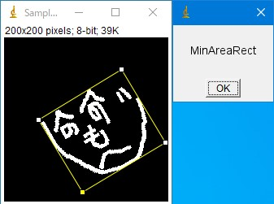
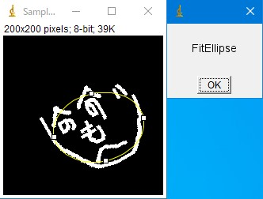
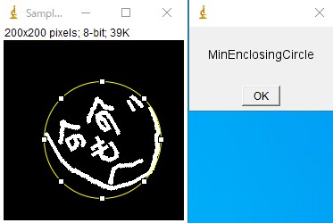
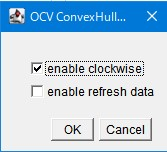

輝度が0以外のピクセル群に対して選択領域を作成するプラグインです。
OCV_BoundingRect
輝度が0以外のピクセル群に対する「外接矩形」を作成します。

- enable_refresh_data
- ONにすると「ROI Manager」をいったんリセットしてから結果を追加します。以下のプラグインも同じです。
OCV_MinAreaRect
輝度が0以外のピクセル群に対する「回転を考慮した外接矩形」を作成します。

- enable_refresh_data
- ONにすると「ROI Manager」をいったんリセットしてから結果を追加します。以下のプラグインも同じです。
OCV_FitEllipse
輝度が0以外のピクセル群に対する「楕円フィッティング」を作成します。

- enable_refresh_data
- ONにすると「ROI Manager」をいったんリセットしてから結果を追加します。以下のプラグインも同じです。
OCV_MinEnclosingCircle
輝度が0以外のピクセル群に対する「最小外接円」を作成します。

- enable_refresh_data
- ONにすると「ROI Manager」をいったんリセットしてから結果を追加します。以下のプラグインも同じです。
OCV_ConvexHull
輝度が0以外のピクセル群に対する「凸包領域」を作成します。
点をすべて包含する最小の凸形状の多角形の領域を計算します。

- enable_clockwise
- ONの場合は時計回り，OFFの場合は反時計回りの形式で点がResultsテーブルに出力されます。かならずリセットされます。
- enable_refresh_data
- ONにすると「ROI Manager」をいったんリセットしてから結果を追加します。以下のプラグインも同じです。
サンプル
サンプルマクロを用意しました。以下の手順で試してください。
- こちらからzipファイルをダウンロードしてください。
- 全て展開します。
- Select_Macro.ijmとSample0.png、「File -> Open」で開きます。
- Select_Macro.ijmを、「Macros -> Run Macro」で実行してください。